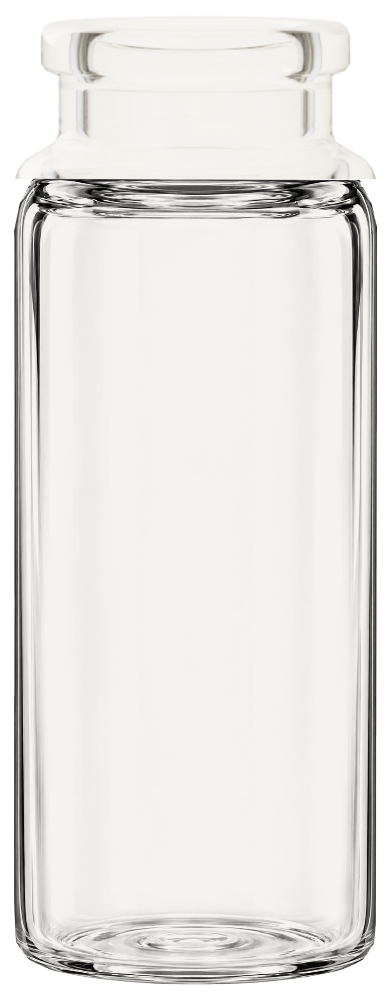
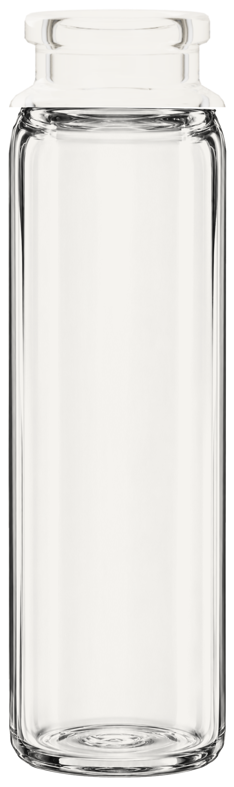
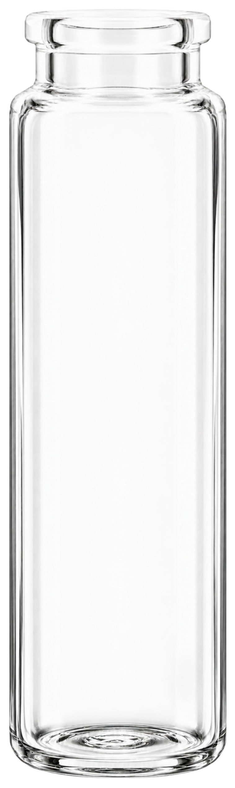

Best Bottles · Local review · Not published
Small sprayer rims and Tulip rollers
Continuous glass for the 3.3 ml and 4 ml sprayers. Level roller-and-plug assemblies for 5 ml amber and 6 ml clear Tulip bottles. Existing bottle framing and size targets are preserved.
Source limit: the short 12 mm necks were previously inferred from sprayer-on PSD photographs. These edits preserve those profiles; they do not establish new physical neck measurements. The small sprayers remain product-page only.
Glass seam comparison
3.3 ml glass detail

BeforeCorrected candidate4 ml glass detail

Before
Corrected candidate